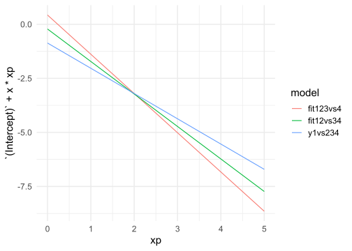

cat_latent_plot(m = c(0, 1), s = c(1, 2), probs = rep(1/4, 4), link = "logit", plot = "both")
The default ordinal regression model assume that the variance of the underlying latent distribution is the same across condition. This is similar to a standard linear regression assuming the homogeneity of variance. For example, when comparing two groups or conditions we can run a standard linear model (i.e., a t-test) assuming homogeneity of variances or using the Welch t-test (see Delacre et al., 2017). In addition, there are the so-called location-scale models that allows to include predictors also for the scale (e.g., the variance) of the distribution. This can be done also in ordinal regression where instead of assuming the same variance between conditions, the linear predictors can be included. The Equations 1 and 2 expand the standard model including the linear predictor on the scale of the latent distribution.
\[ P(Y \leq k) = g^{-1}\left(\frac{\alpha_k - \mathbf{X}\boldsymbol{\beta}}{e^{\boldsymbol{Z}\boldsymbol{\zeta}}}\right) \tag{1}\]
\[ Y^\star_i = \mathbf{X}\boldsymbol{\beta} + \boldsymbol{\epsilon} \;\;\; \epsilon_i \sim \mathcal{N}(0, e^{Z\zeta}) \tag{2}\]
Where \(X\zeta\) is the linear predictor for the scale of the distribution. By default for both the logit and probit model the scale is fixed to 1. On scale-location models we put predictors on both parameters. Given that the scale cannot be negative we use a log link function \(\eta = \text{log}(X\zeta)\). As suggested by Tutz & Berger (2017) location-scale models can be considered as a more parsimonious approach compared to partially or completely relaxing the proportional odds assumption. Allowing the scale to be different as a function of the predictor create more modelling flexibility. Furthermore, two groups could be theoretically different only in the scale of the latent distribution with a similar location. In this example, the only way to capture group differences is by including a scale effect. The fig-scale-effect-example) depict the impact of having different scales between two groups on the ordinal probabilities.
cat_latent_plot(m = c(0, 1), s = c(1, 2), probs = rep(1/4, 4), link = "logit", plot = "both")Tutz (2022) provide a very clear and intuitive explanation of what happen when including a scale effect and how to interpret the result. As suggested before, the scale-location model allow to independently predict changes in the location and the scale. While location shifts are simply interpreted as increasing/decreasing the latent \(\mu\) or the odds of responding a certain category scale effects are not straightforward. As the scale increase (e.g., the variance increase) there is an higher probability mass on extreme categories. On the other side as the scale decrease, responses are more concentrated on specific categories.
The location parameter determine the category and the scale determine the concentration around the category. For example, if one group have a certain latent mean \(\mu_1\) and a small scale \(\sigma^2 = 1/3\) (thus one third compared to the standard version of the distribution), all responses will be focused on categories around the latent mean. On the other side, increasing the scale will increase the cumulative probabilities for all categories and for values that tends to infinity extreme categories are preferred. The scale parameter can somehow be interpreted as the response style.
The location-scale model can be simulated using the sim_ord_latent() function and providing the predictors for the scale parameters. Given the log link function, predictors are provided on the log scale. For example, we simulate the effect of a binary variable \(x\) representing two independent groups predicting the \(k = 5\) response. We simulate a location effect of \(\beta_1 = 0.5\) (in probit scale) and \(\zeta_1 = \text{log}(2) = 0.70\). The first group has a \(\sigma = 1\) and the second group has \(\sigma = 2\). Again we simulate that the baseline probabilities are uniform for the first group.
k <- 5 # number of options (1)
n <- 1e5 # number of observations (1)
b1 <- 0.5 # beta1, the shift in the latent distribution (2)
z1 <- log(2) # zeta1, the change in the scale
probs0 <- rep(1/k, k) # probabilities when x = 0 (3)
alphas <- prob_to_alpha(probs0, link = "probit") # get true thresholds from probabilities (3)
dat <- data.frame(x = rep(c(0, 1), each = n/2))
dat <- sim_ord_latent(~x, scale = ~x, beta = b1, zeta = z1, prob0 = probs0, data = dat, link = "probit")
fit <- clm(y ~ x, scale = ~ x, data = dat, link = "probit")The table (put ref) reports the simulation results.
truth <- c(alphas, b1, z1)
names(truth) <- c(names(fit$alpha), names(fit$beta), names(fit$zeta))
#clm_table(fit, truth)To better understand the impact of assuming (or simulating) a different latent scale we fit \(k - 1\) binomial regressions and check the estimated coefficients. We are not simulating a specific beta for each outcome but simulating a scale effect is actually impacting the regression coefficients. When generating data for a binary outcome the linear predictor is composed by \(\eta = \beta_0 + \beta_1x\). The threshold \(\alpha\) and slope of the function can be estimated using \(\alpha = -\frac{\beta_0}{\beta_1}\) and the slope is \(\frac{1}{\beta_1}\) (Faraggi et al., 2003; Knoblauch & Maloney, 2012). Under the proportional odds assumption, there is only a change in thresholds \(\alpha\) this a shift in the sigmoid along the \(x\) axis. When including a scale effect a change in the sigmoid is combined with a change in the slope.
set.seed(2023)
k <- 4
n <- 1e5
b1 <- 3
d1 <- log(2)
dat <- data.frame(x = runif(n))
dat <- sim_ord_latent(~x, ~x, beta = b1, zeta = d1, prob0 = rep(1/k, k), data = dat, link = "probit")
dat$y1vs234 <- ifelse(dat$y <= 1, 1, 0)
dat$y12vs34 <- ifelse(dat$y <= 2, 1, 0)
dat$y123vs4 <- ifelse(dat$y <= 3, 1, 0)
dat$y <- ordered(dat$y)
fit <- clm(y ~ x, scale = ~x, data = dat, link = "probit")
fit1vs234 <- glm(y1vs234 ~ x, data = dat, family = binomial(link = "probit"))
fit12vs34 <- glm(y12vs34 ~ x, data = dat, family = binomial(link = "probit"))
fit123vs4 <- glm(y123vs4 ~ x, data = dat, family = binomial(link = "probit"))
fits <- list(y1vs234 = fit1vs234, fit12vs34 = fit12vs34, fit123vs4 = fit123vs4)
lapply(fits, function(x) coef(x)) |>
bind_rows(.id = "model") |>
mutate(xp = list(seq(0, 5, 0.01))) |>
unnest(xp) |>
ggplot(aes(x = xp, y = `(Intercept)` + x * xp)) +
geom_line(aes(color = model))
When fitting a model with clm() the way of relaxing the proportional odds or parallel slopes assumption is including what is called a nominal effect. Basically when a predictor is included as a nominal effect, there will be \(k - 1\) coefficients (where \(k\) is the number of ordered levels). In this way, the odds ratio or the difference in \(z\) scores will not be the same across \(k\) levels.
If a scale effect is included in clm() is not immediately clear what happens to the proportional odds assumption. In fact, we are still estimating a single \(\beta\) but we have extra parameters on the scale of the distribution. However, changing the scale of the distribution is the same as changing the slope. This is clear from Figure 3 where changing the scale of the latent distribution is the same as changing the slope of the cumulative probability function. The slope (\(\beta_1\)) is related to the scale of the distribution (logistic or normal) as \(\beta_1 = \frac{1}{s}\). In fact, if we include a scale effect we are changing the scale of the underlying latent distribution and thus the slope of of the functions.
In fact, if we simulate a model with a scale effect, odds ratios or \(z\) differences are no longer constant.
We will simulate the following situation where a binary predictor \(x\) has an effect both on location and scale of the logistic distribution.
odds <- function(p) p / (1 - p)
n <- 1e4 # large N
k <- 4
b1 <- log(3)
z1 <- log(2)
dat <- data.frame(x = rep(c(0, 1), each = n))
dat <- sim_ord_latent(~x, ~x, beta = log(3), zeta = log(2), prob0 = rep(1/k, k), data = dat, link = "logit")
# model with scale effects, log(odds ratios) are different
fit <- clm(y ~ x, scale = ~ x, data = dat, link = "logit")
preds <- predict(fit, newdata = data.frame(x = c(0, 1)))$fit
pcum <- t(apply(preds, 1, cumsum))[, 1:(k - 1)]
apply(pcum, 2, function(c) log(odds(c[1])/odds(c[2]))) 1 2 3
-0.0436072 0.5202012 1.0755903 # model without scale effects, log(odds ratios) are equal
fit0 <- clm(y ~ x, scale = ~ 1, data = dat, link = "logit")
preds <- predict(fit0, newdata = data.frame(x = c(0, 1)))$fit
pcum <- t(apply(preds, 1, cumsum))[, 1:(k - 1)]
apply(pcum, 2, function(c) log(odds(c[1])/odds(c[2]))) 1 2 3
0.6107211 0.6107211 0.6107211 cat_latent_plot(c(0, 0 + b1), s = c(exp(0), (exp(0) + z1)), probs = rep(1/k, k), link = "logit", plot = "both")Actually we can model this dataset using a non-proportional odds model. The model correctly capture the more complex probability structure but we are not able to recover the parameters because we simulated a scale effect.
fit_nominal <- clm(y ~ 1, nominal = ~ x, data = dat, link = "logit")
summary(fit_nominal)formula: y ~ 1
nominal: ~x
data: dat
link threshold nobs logLik AIC niter max.grad cond.H
logit flexible 20000 -26016.82 52045.65 8(0) 3.82e-12 7.8e+01
Threshold coefficients:
Estimate Std. Error z value
1|2.(Intercept) -1.12600 0.02325 -48.421
2|3.(Intercept) -0.01120 0.02000 -0.560
3|4.(Intercept) 1.09063 0.02305 47.320
1|2.x 0.04227 0.03271 1.292
2|3.x -0.51759 0.02879 -17.981
3|4.x -1.07663 0.03052 -35.281Essentially we estimated two sets of thresholds one for the group 0 and one for the group 1. The difference with the previous model (beyond the fact that data are generated under a scale-location model) is that we need more parameters in a non-proportional odds model compared to the scale-location model. This is also more relevant when including more predictors. Also the likelihood ratio test correctly suggest that there is no relevant difference in the likelihood of the two models.
anova(fit, fit_nominal)Likelihood ratio tests of cumulative link models:
formula: nominal: scale: link: threshold:
fit y ~ x ~1 ~x logit flexible
fit_nominal y ~ 1 ~x ~1 logit flexible
no.par AIC logLik LR.stat df Pr(>Chisq)
fit 5 52044 -26017
fit_nominal 6 52046 -26017 0.0478 1 0.8269The location-shift model is considered an alternative way to include dispersion effects (together with location effects) (Tutz, 2022; Tutz & Berger, 2017; Tutz & Berger, 2020). The core of the models is including predictors on the thresholds \(\alpha\) to decrease/increase the probability of response categories \(k\) together with the parameters on the location \(\boldsymbol{\beta}\)
They are similar to the location-scale models in terms of parsimony but different in terms of parameters interpretation. Given that these models cannot be directly fitted by the ordinal package we are not going into details but we included some references to understand the model parametrization. The models are implemented in the ordDisp R package (https://cran.r-project.org/web/packages/ordDisp/index.html).
However, as noted by Berger and Tutz1 there is a correspondence between the partial proportional odds model and the location-shift model. Let’s simulate a model with a scale effect where the true model has a scale effect:
library(ordinal)
library(ordDisp)
n <- 1e3
k <- 3 # number of ordinal levels
probs0 <- rep(1/k, k) # baseline probabilities
dat <- data.frame(x = rep(c(0, 1), each = n))
dat <- sim_ord_latent(~x, ~x,
beta = b1, zeta = z1,
prob0 = probs0,
link = "logit",
data = dat,
simulate = TRUE)
head(dat) x y ys
1 0 1 -2.51596242
2 0 3 4.14198274
3 0 2 -0.06790548
4 0 2 0.43393823
5 0 1 -1.86065820
6 0 3 0.87618582Now let’s fit the location-shift model and the non-proportional odds model:
fit_shift <- ordDisp(y ~ x|x, data = dat)
fit_nopo <- clm(y ~ 1, nominal = ~x, data = dat, link = "logit")
summary(fit_shift)
##
## Call:
## vglm(formula = formula1, family = cumulative(parallel = FALSE ~
## 1, reverse = reverse), data = DM, form2 = formula2, xij = formula3,
## checkwz = FALSE)
##
## Coefficients:
## Estimate Std. Error z value Pr(>|z|)
## (Intercept):1 -0.71724 0.06736 -10.649 < 2e-16 ***
## (Intercept):2 0.65884 0.06671 9.876 < 2e-16 ***
## xx -0.43974 0.08410 -5.229 1.71e-07 ***
## xz -0.63838 0.08481 -7.527 5.18e-14 ***
## ---
## Signif. codes: 0 '***' 0.001 '**' 0.01 '*' 0.05 '.' 0.1 ' ' 1
##
## Names of linear predictors: logitlink(P[Y<=1]), logitlink(P[Y<=2])
##
## Residual deviance: 4203.753 on 3996 degrees of freedom
##
## Log-likelihood: -2101.876 on 3996 degrees of freedom
##
## Number of Fisher scoring iterations: 3
##
## No Hauck-Donner effect found in any of the estimates
##
##
## Exponentiated coefficients:
## xx xz
## 0.6442065 0.5281488
summary(fit_nopo)
## formula: y ~ 1
## nominal: ~x
## data: dat
##
## link threshold nobs logLik AIC niter max.grad cond.H
## logit flexible 2000 -2101.88 4211.75 6(0) 9.75e-08 3.2e+01
##
## Threshold coefficients:
## Estimate Std. Error z value
## 1|2.(Intercept) -0.71724 0.06736 -10.649
## 2|3.(Intercept) 0.65884 0.06671 9.876
## 1|2.x -0.12055 0.09634 -1.251
## 2|3.x -0.75892 0.09198 -8.251Firstly, there is a correspondence in the baseline thresholds:
# location-shift model
coef(fit_shift)[1:(k - 1)]
## (Intercept):1 (Intercept):2
## -0.7172447 0.6588411
# non proportional odds model
coef(fit_nopo)[1:(k - 1)]
## 1|2.(Intercept) 2|3.(Intercept)
## -0.7172447 0.6588411Then also linear predictors \(\eta\) are the same:
# let's see the linear predictor for x = 1
# location-shift model
predict(fit_shift)[n + 1, ]
## logitlink(P[Y<=1]) logitlink(P[Y<=2])
## -0.8377921 -0.1000835
# non proportional odds model
predict(fit_nopo, newdata = data.frame(x = 1), type = "linear.predictor")$eta1[, -k]
## 1 2
## -0.8377921 -0.1000835Clearly the results are different when fitting a location-scale model:
fit_scale <- clm(y ~ x, scale = ~x, data = dat, link = "logit")
summary(fit_scale)
## formula: y ~ x
## scale: ~x
## data: dat
##
## link threshold nobs logLik AIC niter max.grad cond.H
## logit flexible 2000 -2101.88 4211.75 8(0) 1.21e-07 1.7e+01
##
## Coefficients:
## Estimate Std. Error z value Pr(>|z|)
## x 0.8455 0.1421 5.95 2.68e-09 ***
## ---
## Signif. codes: 0 '***' 0.001 '**' 0.01 '*' 0.05 '.' 0.1 ' ' 1
##
## log-scale coefficients:
## Estimate Std. Error z value Pr(>|z|)
## x 0.6234 0.0858 7.266 3.7e-13 ***
## ---
## Signif. codes: 0 '***' 0.001 '**' 0.01 '*' 0.05 '.' 0.1 ' ' 1
##
## Threshold coefficients:
## Estimate Std. Error z value
## 1|2 -0.71724 0.06736 -10.649
## 2|3 0.65884 0.06671 9.876
predict(fit_scale, newdata = data.frame(x = 1), type = "linear.predictor")$eta1[, -k]
## 1 2
## -0.8377921 -0.1000835https://www.researchgate.net/profile/Gerhard-Tutz/publication/305082385_Modelling_of_Varying_Dispersion_in_Cumulative_Regression_Models/links/578115fd08ae9485a43bd0f0/Modelling-of-Varying-Dispersion-in-Cumulative-Regression-Models.pdf↩︎